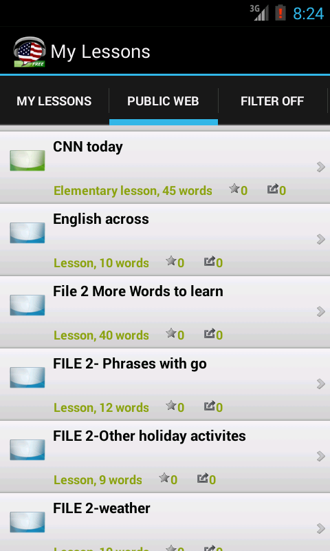

|  | My Lessons zálo¾ka obsahuje lekce stáhnuté do va¹eho telefonu nebo tabletu. V¹echny sta¾ené lekce se dají opakovat kdykoliv a slovíèka z tìchto lekcí se automaticky pøidají do va¹í aktivní slovní zásoby. Uèit se musíte postupnì a nesna¾te se nauèit pøíli¹ mnoho slovíèek najednou. Z tohoto dùvodu je mù¾ete mít stáhnuto 50 lekcí, a pokud si budete chtít stáhnout lecí více, budete si muset lekce v telefonu promazat. V¹echny lekce zùstanou aktivní na Internetu, tak¾e se k nim mù¾ete podle potøeby vrátit. Tip : Sna¾te se omezit poèet lekcí ve va¹em telefonu a nepokou¹ejte si dávat pøíli¹ ambiciózní cíle. Pokus se budete sna¾it uèit pøíli¹ slovíèek najednou, nenauèíte se je dobøe a natrvalo. My Lessons jsou nástrojem ke krátkodobému zrychlení uèení a lekce byste nemìli pou¾ívat déle ne¾ jeden mìsíc. Prùbì¾nì promazávejte staré lekce a spoléhejte se na uèení pomocí "Spaced repetition" procesu, kterým si budete opakovat slovíèka v optimálních intervalech a vybudujete si trvalé znalosti. Pou¾ijte Filtr k vymazání star¹ích lekcí. |
Tato zálo¾ka zobrazí lekce které jsou k dispozici na Internetu. V¹echny lekce se ulo¾í do katalogu na Internet, Public lekce se zobrazí v¹em u¾ivatelùm a Private lekce se zobrazí pouze Vám. Ka¾dá lekce se dá stáhnou do va¹eho zaøízení, ale mìjte na pamìti ¾e si v telefonu mù¾ete nechat 50 lekcí.
Lekce lze organizovat do slo¾ek. Ikony lekcí a slo¾ek mají rùznou barvu podle statusu.
| Zelené ikony Lekce a slo¾ky stáhnuté do va¹eho zaøízení se zobrazí zelenì. Zelená barva se v programu pou¾ívá pro v¹echno co je v telefonu. |
||
| Modré ikony Data ulo¾ené na Internetu se zobrazí modrou barvou. V¹echny lekce sdílené ostatními u¾ivateli na Internetu jsou modrou barvou, po stáhnutí do telefonu budou mít barvu zelenou. Modrá barva je pro v¹echny komponenty které jsou na Internetu. |
||
| Èervené ikony Pokud se lekce zmìnila od posledního sta¾ení, ikona bude mít èervenou barvu. Mù¾ete sesynchronizovat telefon se Internetem pro takto zmìnìné lekce. |